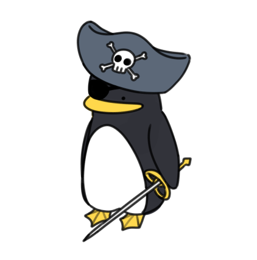

|
Captain Cal
칼 선장님
(스포일러)
|
|
|  | |
| 소속 게임 | 북극해 생존기 |
|---|---|
| 거주 지역 | 마을 여관 |
| 성별 | 불명 |
| 나이 | 불명 |
| 신체 | 110cm / 30kg |
| 취미 | 이야기 듣기 |
| 좋아하는 것 | 새로운 만남, 처음 보는 것, 여행, 생선 |
| 종족 | 펭귄? |
Arctic sea survival story 의 조연. 주인공을 마을까지 이끌어주는 주요 등장인물이다. 주인공이 이 세계에 잘 적응할 수 있도록 도움을 주는 역할이며 간혹 작품을 꿰뚫어 그 너머의 플레이어에게 하는듯한 언행을 보이기도 한다.
영락없는 펭귄의 모습이다. 남색 해적모자를 쓰고 있으나 인게임 내에서 해적짓과는 거리가 멀다고 언급한 바 있다. 검은색 안대도 착용하고 있는데, 덩치 큰 곰과의 전투에서 다쳤다고 밝혔다.
곰의 생김새와 특징이 마을의 촌장인 데이먼이라는 설이 존재한다. 공식에서의 입장은 밝혀진 바 없다.매너가 워낙 좋아 말 그대로 신사라고 할 법한 성격이다. 나이가 가늠되지 않는 생김새에 나이가 지긋한 어르신의 말투를 구사하는 것을 보아 예상보다 나이가 굉장히 많은 것을 알 수 있다. 인게임 내에서 밝힌 바로는 당시 시간선 기준, 선장이 된지 딱 450년이 되었다 말하는 대사도 찾을 수 있는 것으로 보아, 최소 600살 이상으로 추정된다.
유독 데이먼과의 대사량이 많아 일부에서 미는 커플링이다. 둘의 과거 서사를 더 내놓으라는 일부 유저들의 성원이 자자하다.
유일한 미혼 여성으로, 정말 일부에서 미는 커플링이다. 국내보단 해외에서의 수요가 많다.
커플링 보다는 같은 선장으로, 동료애로 엮는 사람이 많다. 칼 선장님도 릭과 함께 있을 때엔 격식을 살짝 내려놓는 모습을 보이기도 한다.
이 문서는 팬메이드 자캐 문서이며, 실제로 존재하는 게임 및 웹사이트가 아닙니다.